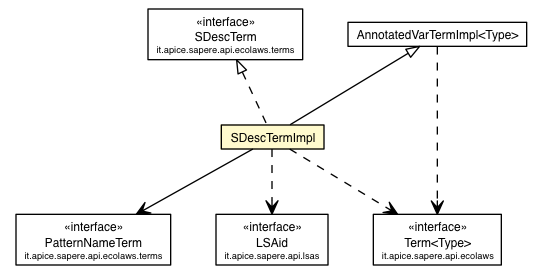

it.apice.sapere.api.ecolaws.terms.impl
Class SDescTermImpl

java.lang.Object
 it.apice.sapere.api.ecolaws.terms.impl.AbstractTerm<Type>
it.apice.sapere.api.ecolaws.terms.impl.VarTermImpl<Type>
it.apice.sapere.api.ecolaws.terms.impl.AnnotatedVarTermImpl<SemanticDescription>
it.apice.sapere.api.ecolaws.terms.impl.SDescTermImpl
it.apice.sapere.api.ecolaws.terms.impl.AbstractTerm<Type>
it.apice.sapere.api.ecolaws.terms.impl.VarTermImpl<Type>
it.apice.sapere.api.ecolaws.terms.impl.AnnotatedVarTermImpl<SemanticDescription>
it.apice.sapere.api.ecolaws.terms.impl.SDescTermImpl
- All Implemented Interfaces:
- Term<SemanticDescription>, AnnotatedVarTerm<SemanticDescription>, SDescTerm, VarTerm<SemanticDescription>
public class SDescTermImpl
- extends AnnotatedVarTermImpl<SemanticDescription>
- implements SDescTerm
Implementation of the SDescTerm interface.
- Author:
- Paolo Contessi
SDescTermImpl
public SDescTermImpl(String varName)
Builds a new SDescTermImpl.
- Parameters:
varName - The name of the variable
SDescTermImpl
public SDescTermImpl(String varName,
Formula<SemanticDescription> boolCond)
Builds a new SDescTermImpl.
- Parameters:
varName - The name of the variableboolCond - The binding acceptance criteria
SDescTermImpl
public SDescTermImpl(SemanticDescription sdesc)
Builds a new SDescTermImpl.
- Parameters:
sdesc - The semantic description
SDescTermImpl
public SDescTermImpl(LSA lsa)
Builds a new SDescTermImpl.
- Parameters:
lsa - The involved LSA
SDescTermImpl
public SDescTermImpl(PatternNameTerm pattern)
Builds a new SDescTermImpl.
- Parameters:
pattern - The interested PatternNameTerm
SDescTermImpl
public SDescTermImpl(SDescTermImpl src)
Clone constructor.
- Parameters:
src - Term to be cloned
getLinkedLSAid
public final LSAid getLinkedLSAid()
throws SAPEREException
- Specified by:
getLinkedLSAid in interface SDescTerm
- Throws:
SAPEREException
clone
public final Term<SemanticDescription> clone()
throws CloneNotSupportedException
- Specified by:
clone in interface Term<SemanticDescription>- Overrides:
clone in class AnnotatedVarTermImpl<SemanticDescription>
- Throws:
CloneNotSupportedException
Copyright © 2012 APICe Lab, Alma Mater Studiorum - Università degli Studi di Bologna. All Rights Reserved.